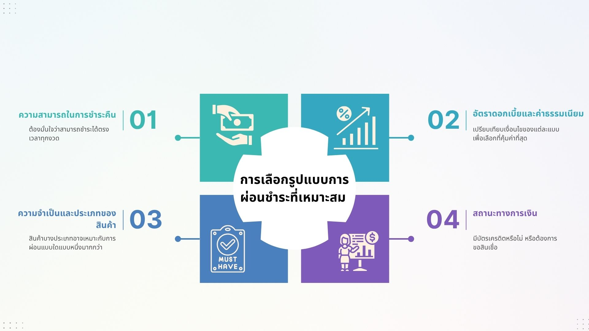
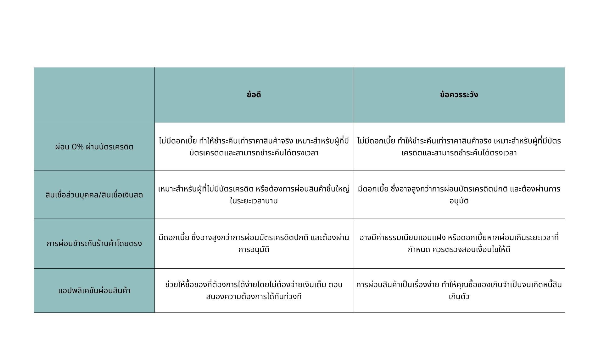

MindMyMoney • คู่มือการผ่อนชำระ
การผ่อนชำระ: รูปแบบและการวางแผน
การผ่อนชำระสามารถจำแนกออกเป็นรูปแบบหลัก ๆ ได้ตามลักษณะการจ่ายและการคิดดอกเบี้ยในแต่ละเดือน ดังนี้ครับ
รูปแบบการผ่อนชำระ
1. การผ่อนชำระแบบไม่มีดอกเบี้ย (ผ่อน 0%)
- ลักษณะการจ่าย: ผู้ซื้อจะชำระค่าสินค้าหรือบริการเป็นงวด ๆ เท่ากันทุกเดือน โดยยอดรวมที่ชำระจะเท่ากับราคาสินค้าพอดี ไม่มีดอกเบี้ยหรือค่าใช้จ่ายเพิ่มเติม
- การคิดดอกเบี้ย: ไม่มีดอกเบี้ย
- เงื่อนไข:
- มักเป็นโปรโมชั่นพิเศษจากร้านค้าและสถาบันการเงิน (บัตรเครดิต) สำหรับสินค้าหรือบริการที่ร่วมรายการ
- มีระยะเวลาผ่อนชำระที่จำกัด เช่น 3, 6, 10, 12 เดือน หรือนานกว่านั้นตามโปรโมชั่น
- ผู้ซื้อต้องมีบัตรเครดิตที่ร่วมรายการ หรือใช้บริการ Buy Now Pay Later (BNPL) ที่มีโปรโมชั่น 0%
- เหมาะสำหรับ: ผู้ที่ต้องการซื้อสินค้าที่มีราคาสูงโดยไม่ต้องการแบกรับภาระดอกเบี้ย และสามารถชำระคืนได้ตรงเวลาตามงวดที่กำหนด
2. การผ่อนชำระแบบมีดอกเบี้ย
การผ่อนชำระรูปแบบนี้จะมีการคิดดอกเบี้ยเพิ่มเติมจากราคาสินค้า ทำให้ยอดรวมที่ต้องชำระสูงกว่าราคาสินค้าจริง แบ่งย่อยได้อีกหลายประเภทตามผลิตภัณฑ์ทางการเงิน:
2.1 การผ่อนชำระผ่านบัตรเครดิตแบบมีดอกเบี้ย
- ลักษณะการจ่าย: ผู้ซื้อชำระค่าสินค้าเป็นงวด ๆ พร้อมดอกเบี้ยที่คำนวณจากยอดคงเหลือในแต่ละเดือน
- การคิดดอกเบี้ย:
- ดอกเบี้ยจะถูกคิดเป็นรายวันจากยอดคงค้าง และนำมารวมในยอดที่ต้องชำระในแต่ละรอบบิล
- อัตราดอกเบี้ยเป็นไปตามที่ธนาคารผู้ออกบัตรกำหนด (ปัจจุบันสูงสุดไม่เกิน 16% ต่อปี)
- หากชำระขั้นต่ำ ดอกเบี้ยจะถูกคิดจากยอดคงเหลือทั้งหมด และยอดดอกเบี้ยจะเพิ่มขึ้นเรื่อย ๆ หากไม่ชำระเต็มจำนวน
- เงื่อนไข: ใช้บัตรเครดิตในการทำรายการ มักใช้เมื่อไม่มีโปรโมชั่น 0% หรือต้องการผ่อนในระยะเวลาที่นานกว่าโปรโมชั่น
- เหมาะสำหรับ: ผู้ที่ต้องการความยืดหยุ่นในการชำระเงิน หรือต้องการผ่อนสินค้าที่ไม่มีโปรโมชั่น 0%
2.2 สินเชื่อส่วนบุคคล/สินเชื่อเงินสด (สำหรับซื้อสินค้า)
- ลักษณะการจ่าย: ผู้กู้จะได้รับเงินก้อนจากสถาบันการเงินเพื่อนำไปซื้อสินค้า และผ่อนชำระคืนเป็นงวด ๆ (รวมเงินต้นและดอกเบี้ย) ตามสัญญา
- การคิดดอกเบี้ย:
- เป็นอัตราดอกเบี้ยแบบลดต้นลดดอก (Effective Rate) หรือแบบคงที่ (Flat Rate) ขึ้นอยู่กับเงื่อนไขของสินเชื่อ
- ดอกเบี้ยจะถูกคำนวณจากยอดเงินต้นคงเหลือในแต่ละงวด (สำหรับลดต้นลดดอก) หรือคำนวณจากเงินต้นทั้งหมดตลอดอายุสัญญา (สำหรับคงที่)
- อัตราดอกเบี้ยมักสูงกว่าบัตรเครดิต 0% แต่ต่ำกว่าการกดเงินสดจากบัตรเครดิต
- เงื่อนไข: ต้องยื่นเอกสารเพื่อขออนุมัติสินเชื่อจากธนาคารหรือสถาบันการเงิน
- เหมาะสำหรับ: ผู้ที่ไม่มีบัตรเครดิต หรือต้องการซื้อสินค้าชิ้นใหญ่ที่ต้องการระยะเวลาผ่อนนาน และต้องการดอกเบี้ยที่ชัดเจน
2.3 การผ่อนชำระกับร้านค้าโดยตรง (Hire Purchase / Leasing)
- ลักษณะการจ่าย: ผู้ซื้อทำสัญญาเช่าซื้อกับร้านค้าหรือบริษัทไฟแนนซ์ และผ่อนชำระเป็นงวด ๆ จนครบตามสัญญา กรรมสิทธิ์ของสินค้าจะโอนให้เมื่อผ่อนชำระครบถ้วน
- การคิดดอกเบี้ย:
- มักเป็นอัตราดอกเบี้ยแบบคงที่ (Flat Rate) คำนวณจากราคาสินค้าตลอดอายุสัญญา และนำมารวมในยอดผ่อนแต่ละงวด
- อัตราดอกเบี้ยอาจแตกต่างกันไปตามประเภทสินค้าและเงื่อนไขของผู้ให้บริการ
- เงื่อนไข: ใช้สำหรับการซื้อสินค้าเฉพาะอย่าง เช่น รถยนต์ รถจักรยานยนต์ เครื่องใช้ไฟฟ้าขนาดใหญ่
- เหมาะสำหรับ: ผู้ที่ต้องการซื้อสินค้าเฉพาะประเภท และต้องการผ่อนชำระโดยตรงกับผู้ขายหรือบริษัทไฟแนนซ์
2.4 แอปพลิเคชันผ่อนสินค้า (Buy Now Pay Later - BNPL) แบบมีดอกเบี้ย
- ลักษณะการจ่าย: ผู้ซื้อผ่อนชำระเป็นงวด ๆ ผ่านแอปพลิเคชัน โดยมีดอกเบี้ยหรือค่าธรรมเนียมเพิ่มเติม
- การคิดดอกเบี้ย: อาจเป็นดอกเบี้ยรายเดือน หรือค่าธรรมเนียมการใช้บริการ ขึ้นอยู่กับเงื่อนไขของแต่ละแพลตฟอร์ม
- เงื่อนไข: สมัครใช้งานผ่านแอปพลิเคชัน ผูกกับบัญชีธนาคารหรือบัตรเดบิต อาจมีวงเงินอนุมัติจำกัด
- เหมาะสำหรับ: ผู้ที่ไม่มีบัตรเครดิต หรือต้องการความสะดวกในการผ่อนสินค้าออนไลน์ในวงเงินที่ไม่สูงมากนัก

เปรียบเทียบรูปแบบการผ่อนชำระ
การเลือกรูปแบบการผ่อนชำระที่เหมาะสม
- ความสามารถในการชำระคืน: ต้องมั่นใจว่าสามารถชำระได้ตรงเวลาทุกงวด
- อัตราดอกเบี้ยและค่าธรรมเนียม: เปรียบเทียบเงื่อนไขของแต่ละแบบเพื่อเลือกที่คุ้มค่าที่สุด
- ความจำเป็นและประเภทของสินค้า: สินค้าบางประเภทอาจเหมาะกับการผ่อนแบบใดแบบหนึ่งมากกว่า
- สถานะทางการเงิน: มีบัตรเครดิตหรือไม่ หรือต้องการขอสินเชื่อ
การวางแผนการผ่อนชำระ: กุญแจสู่การเงินที่มั่นคง
การผ่อนชำระเป็นเครื่องมือทางการเงินที่ช่วยให้เราเข้าถึงสินค้าและบริการที่มีมูลค่าสูงได้ง่ายขึ้น แต่หากไม่มีการวางแผนที่ดี ก็อาจกลายเป็นภาระที่บั่นทอนสุขภาพทางการเงินได้ การวางแผนการผ่อนชำระอย่างรอบคอบจึงเป็นสิ่งสำคัญ เพื่อให้คุณสามารถจัดการหนี้ได้อย่างมีประสิทธิภาพและรักษาความมั่นคงทางการเงินไว้ได้

การวางแผนการผ่อนชำระ
ขั้นตอนการวางแผนการผ่อนชำระ
1. ประเมินความสามารถในการผ่อนชำระของตนเอง
- คำนวณรายได้สุทธิ: หักลบค่าใช้จ่ายจำเป็นในแต่ละเดือนออก เพื่อให้ทราบว่ามีเงินเหลือเท่าไรที่สามารถจัดสรรมาผ่อนชำระได้
- ใช้กฎ 30-40%: โดยทั่วไป ภาระหนี้สินผ่อนชำระทั้งหมด (ไม่รวมหนี้บ้าน) ไม่ควรเกิน 30-40% ของรายได้สุทธิ ต่อเดือน เช่น ถ้ามีรายได้ 20,000 บาท ไม่ควรก่อหนี้ผ่อนชำระเกิน 6,000 - 8,000 บาทต่อเดือน
- พิจารณาภาระหนี้เดิม: หากมีภาระหนี้อื่น ๆ อยู่แล้ว เช่น ผ่อนรถยนต์ สินเชื่อส่วนบุคคล จะต้องนำมารวมคำนวณด้วย เพื่อไม่ให้ภาระหนี้เกินกำลัง
2. เลือกรูปแบบการผ่อนชำระที่เหมาะสม
ปัจจุบันมีรูปแบบการผ่อนชำระหลากหลาย ทั้งแบบผ่านสถาบันการเงินและไม่ผ่านสถาบันการเงิน ควรเลือกให้ตรงกับความต้องการและสถานะของคุณ
3. เปรียบเทียบเงื่อนไขและดอกเบี้ย
- อัตราดอกเบี้ย: สิ่งที่สำคัญที่สุดในการเปรียบเทียบ เลือกอัตราที่ต่ำที่สุด
- ค่าธรรมเนียม: ตรวจสอบค่าธรรมเนียมแอบแฝง เช่น ค่าธรรมเนียมการอนุมัติ ค่าธรรมเนียมการจัดการ หรือค่าปรับหากชำระล่าช้า
- ระยะเวลาผ่อนชำระ: เลือกช่วงเวลาที่เหมาะสมกับความสามารถในการชำระของคุณ ไม่สั้นเกินไปจนตึงตัว และไม่ยาวเกินไปจนต้องจ่ายดอกเบี้ยมาก
- โปรโมชั่น: บางครั้งอาจมีโปรโมชั่นพิเศษ เช่น ส่วนลด หรือของแถม ควรนำมาพิจารณาประกอบ
4. จัดทำแผนการชำระหนี้
- กำหนดวันที่ชำระ: ตั้งค่าการแจ้งเตือนหรือตัดบัญชีอัตโนมัติ เพื่อไม่ให้ลืมชำระ
- บันทึกรายการ: จดบันทึกยอดเงินที่ต้องผ่อนชำระ วันครบกำหนด และยอดคงเหลือ เพื่อติดตามสถานะหนี้สิน
- กันเงินไว้ล่วงหน้า: จัดสรรเงินสำหรับค่าผ่อนชำระไว้ทันทีที่ได้รับรายได้ เพื่อให้มั่นใจว่ามีเงินเพียงพอ
5. รักษาวินัยทางการเงิน
- ชำระให้ตรงเวลา: การชำระหนี้ตรงเวลาจะช่วยรักษาประวัติเครดิตที่ดี และหลีกเลี่ยงค่าปรับหรือดอกเบี้ยเพิ่มเติม
- หลีกเลี่ยงการก่อหนี้ใหม่โดยไม่จำเป็น: ควบคุมการใช้จ่าย และหลีกเลี่ยงการผ่อนชำระเพิ่ม หากภาระหนี้เดิมยังหนักอยู่
- ทบทวนแผนเป็นระยะ: ตรวจสอบแผนการผ่อนชำระของคุณเป็นประจำ เพื่อปรับเปลี่ยนให้เข้ากับสถานการณ์ทางการเงินที่เปลี่ยนแปลงไป